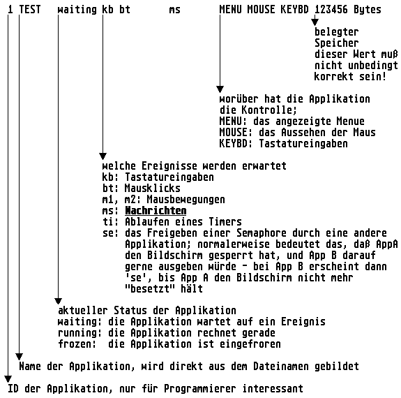

Über den Task-Manager von MagiC können verschiedene Aufgaben wie z.B. das Einfrieren, Auftauen oder Beenden von Prozessen ausgeführt werden. Aufgerufen wird der Manager durch die Tastenkombination Ctrl-Alt-Esc. Nach dem Aufruf erscheint eine Liste aller im Speicher befindlichen Programme, die wie folgt aufgebaut ist:

Hinweis: Unterhalb dieser Liste befindet sich ein Menü, welches eine Reihe von Kommandos zur Steuerung des Systems zur Verfügung stellt. Im einzelnen:
| Kommando | Bedeutung |
| Control | MagiC versucht, der gewählten Applikation die Kontrolle über Bildschirm und Maus zu geben - dies kann u.U. bei Deadlocks helfen. |
| freeze | Die gewählte Applikation wird eingefroren, sie ist dann für alle anderen Programme unsichtbar und bekommt keine Rechenzeit. |
| OK | zurück zum Normalbetrieb, der Taskmanager wird ohne Aktion verlassen. |
| prev, next | eine Zeile der obigen Liste ist immer invertiert dargestellt, welche das ist, kann mittels Cursor hoch/runter eingestellt werden; die folgenden Kommandos beziehen sich jeweils auf die so festgelegte Applikation. Applikationen mit einstelligen IDs können auch direkt durch Eingabe der entsprechenden Ziffer ausgewählt werden. |
| Switch | Die Menueleiste der gewählten Applikation wird aktiviert. |
| Terminate | Die gewählte Applikation wird unsanft aus dem Speicher geworfen, wobei in der Regel alle ihre Daten verloren gehen; zuweilen kann das sogar zu Abstürzen führen, diese Funktion sollte also mit besonderer Vorsicht genossen werden. |
| unfreeze | Hiermit werden eingefrorene Applikationen wieder aufgetaut, sie fahren dann an der Stelle mit ihrer Arbeit fort, an der sie eingefroren wurden. |
Querverweis: Prozessfunktionen U:\PROC